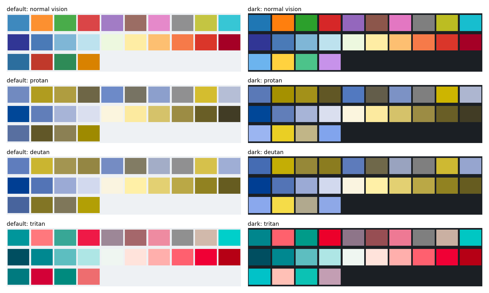

PlotStyle.to_dict / from_dict / save / load make styles portable (JSON, versioned). Accessibility tests simulate color vision deficiency for the categorical, diverging and overlay colors of the default and dark styles. The ten categorical colors cannot all differ under red-green deficiency (minimum color difference 4 to 7), the overlay colors of the dark style are close under protanopia and deuteranopia (10.0 and 3.4); the rest passes.
fig.py <output dir> draws the figure (it imports the helpers of tests/test_style_accessibility.py).
to_dict writes only the fields that are set, with version: 1. A colormap is written by name when matplotlib has it under that name, otherwise as its colors (a continuous colormap as 256 samples). axes.prop_cycle round-trips. An rc value that is not JSON raises TypeError; unknown keys, an unknown version and invalid values raise ValueError.from_mplstyle round-trip to an equal style.| check | default | dark |
|---|---|---|
| ten categories, normal vision | 23.1 | 27.7 |
| ten categories, protan / deutan / tritan | 4.0 / 5.6 / 12.8 | 4.6 / 7.2 / 15.2 |
| ends of the diverging palette, protan / deutan / tritan | 66.7 / 90.0 / 97.2 | 66.7 / 90.0 / 97.2 |
| overlay colors against each other, protan / deutan / tritan | 16.8 / 26.7 / not below 10 | 10.0 (9.95) / 3.4 / not below 10 |
| overlay colors against the surface (WCAG ratio) | 2.6 to 4.8 | 6.9 to 11.5 |
Findings, marked xfail(strict=True) in the tests: ten qualitative colors cannot all differ under protanopia and deuteranopia (the best five of the ten do, and that is tested); the four overlay colors of the dark style are close under protanopia (just below 10) and deuteranopia (the accent yellow and the positive green, 3.4). The contrast of an overlay against the fills of a sequential ramp is not checked: a single color matches some fill of a ramp that runs from light to dark, so the overlays are checked against the surface and the reference layer.

Categorical (first row), diverging (second row) and overlay colors (third row) of the default (left) and dark (right) style under normal vision and simulated protanopia, deuteranopia and tritanopia.